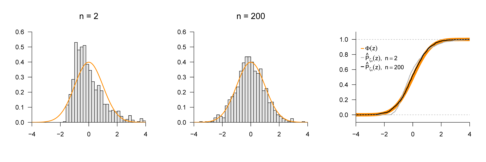

27 Grenzwerte
In diesem Kapitel beschäftigen wir uns mit für die probabilistische Modellbildung und Datenanalyse grundlegenden Grenzwertaussagen zu Folgen von Zufallsvariablen. Dabei liefern die Gesetze der großen Zahlen (Kapitel 27.1) zunächst eine grundlegende Begründung für die Mittelwertbildung im Rahmen der probabilistischen Inferenz. Die zentralen Grenzwertsätze liefern dann die Begründung für die weite Verbreitung von Normalverteilungsannahmen zu unbekannten Einflüssen im Rahmen der probabilistischen Modellformulierung (Kapitel 27.2). Die mathematische Tiefe dieser Grenzwertaussagen kann in dieser einführenden Betrachtung nicht ausgeschöpft werden, sodass wir uns mit zahlreichen Vereinfachungen begnügen müssen. Ein minimales Vorwissen zu Funktionenfolgen und ihren Grenzfunktionen liefert Kapitel 5.
27.1 Gesetze der großen Zahlen
Es gibt ein schwaches Gesetz der großen Zahlen und ein starkes Gesetz der großen Zahlen. Intuitiv besagen beide Gesetze, dass sich das Stichprobenmittel von unabhängigen und identisch verteilten Zufallsvariablen für eine große Anzahl an Zufallsvariablen dem Erwartungswert der zugrundeliegenden Verteilung nähert. Das schwache und das starke Gesetz der großen Zahlen unterscheiden sich in Hinblick auf die zu ihrer Formulierung benutzen Formen der Konvergenz von Zufallsvariablen. Das schwache Gesetz basiert auf der Konvergenz in Wahrscheinlichkeit. Das starke Gesetz basiert auf der fast sicheren Konvergenz. Wir begnügen uns hier mit dem Begriff der Konvergenz in Wahrscheinlichkeit und damit dem schwachen Gesetz der großen Zahlen.
Definition 27.1 (Konvergenz in Wahrscheinlichkeit) Eine Folge von Zufallsvariablen \(\xi_1,\xi_2,...\) konvergiert gegen eine Zufallsvariable \(\xi\) in Wahrscheinlichkeit, wenn für jedes noch so kleine \(\epsilon > 0\) gilt, dass \[\begin{equation} \lim_{n \to \infty} \mathbb{P}(|\xi_n - \xi| < \epsilon) = 1 \Leftrightarrow \lim_{n \to \infty} \mathbb{P}(|\xi_n - \xi| \ge \epsilon) = 0. \end{equation}\] Die Konvergenz von \(\xi_1,\xi_2,....\) gegen \(\xi\) in Wahrscheinlichkeit wird geschrieben als \[\begin{equation} \xi_n\xrightarrow[n \to \infty]{\mbox{P}} \xi. \end{equation}\]
\(\xi_n\xrightarrow[n \to \infty]{\text{P}} \xi\) heißt also, dass sich die Wahrscheinlichkeit dafür, dass \(\xi_n\) in dem zufälligen Intervall \[\begin{equation} ]\xi-\epsilon, \xi+\epsilon[ \end{equation}\] liegt, unabhängig davon, wie klein dieses Intervall sein mag, \(1\) nähert, wenn \(n\) gegen Unendlich geht. Intuitiv heißt das, dass sich für \(n \to \infty\) und eine konstante Zufallsvariable \(\xi := a\) die Verteilung von \(\xi_n\) mehr und mehr um \(a\) konzentriert, wenn \(n\) gegen Unendlich strebt. Mithilfe der Konvergenz in Wahrscheinlichkeit formuliert man das schwache Gesetz der großen Zahlen wie folgt.
Theorem 27.1 (Schwaches Gesetz der großen Zahlen) \(\xi_1,...,\xi_n\) seien unabhängig und identisch verteilte Zufallsvariablen mit \(\mathbb{E}(\xi_i) = \mu\) für alle \(i = 1,...,n\). Weiterhin bezeichne \[\begin{equation} \bar{\xi}_n := \frac{1}{n}\sum_{i=1}^n \xi_i \end{equation}\] das Stichprobenmittel der \(\xi_i, i = 1,...,n\). Dann konvergiert \(\bar{\xi}_n\) in Wahrscheinlichkeit gegen \(\mu\), \[\begin{equation} \bar{\xi}_n \xrightarrow[n \to \infty]{\mbox{P}} \mu. \end{equation}\]
Beweis. Mit Theorem 23.2 gilt zunächst, dass \[\begin{equation} \mathbb{E}\left(\bar{\xi}_n\right) = \mathbb{E}\left(\frac{1}{n}\sum_{i=1}^n \xi_i\right) = \frac{1}{n}\sum_{i=1}^n \mathbb{E}\left(\xi_i\right) = \frac{1}{n} n \mathbb{E}\left(\xi_i\right) = \mathbb{E}\left(\xi_i\right) = \mu. \end{equation}\] Der Erwartungswert \(\mu\) der \(i\)ten Stichprobenvariable \(\xi_i\) stimmt also mit dem Erwartunsgwert des Stichprobenmittels \(\bar{\xi}_n\) überein. Weiterhin halten wir fest, dass mit Theorem 25.6 und Theorem 25.8 bei Unabhängigkeit der Zufallsvariablen gilt, dass \[\begin{equation} \mathbb{V}\left(\bar{\xi}_n\right) = \mathbb{V}\left(\frac{1}{n}\sum_{i=1}^n \xi_i\right) = \frac{1}{n^2}\sum_{i=1}^n \mathbb{V}\left(\xi_i\right) = \frac{1}{n^2}n\mathbb{V}\left(\xi_i\right) = \frac{\mathbb{V}\left(\xi_i\right)}{n}. \end{equation}\] Die Varianz des Stichprobenmittels ergibt sich also durch Teilen der Varianz der \(i\)ten Stichprobenvariable durch \(n\). Mit Theorem 26.2 gilt dann aber \[\begin{equation} \mathbb{P}(|\bar{\xi}_n - \mathbb{E}\left(\bar{\xi}_n\right)| \ge \epsilon) \le \frac{\mathbb{V}\left(\bar{\xi}_n\right)}{\epsilon^2} = \frac{\mathbb{V}\left(\xi_i\right)}{n\epsilon^2}. \end{equation}\] Dann aber gilt für beliebige \(\mathbb{V}\left(\xi_i\right)\ge 0\) und \(\epsilon > 0\) und mit der Nichtnegativität der Wahrscheinlichkeit \[\begin{equation} \lim_{n \to \infty} \mathbb{P}(|\bar{\xi}_n - \mathbb{E}\left(\bar{\xi}_n\right)| \ge \epsilon) \le \lim_{n \to \infty} \frac{\mathbb{V}\left(\xi_i\right)}{n\epsilon^2} \Leftrightarrow \lim_{n \to \infty} \mathbb{P}(|\bar{\xi}_n - \mu| \ge \epsilon) \le 0 \Leftrightarrow \lim_{n \to \infty} \mathbb{P}(|\bar{\xi}_n - \mu| \ge \epsilon) = 0 \end{equation}\] und es ist alles gezeigt.
Intuitiv heißt \[\begin{equation} \bar{\xi}_n \xrightarrow[n\to\infty]{\mbox{P}} \mu, \end{equation}\] dass die Wahrscheinlichkeit, dass das Stichprobenmittel nahe dem Erwartungswert der zugrundeliegenden Verteilung liegt, sich 1 nähert, wenn \(n\) gegen Unendlich strebt.
Beispiel 27.1 (Simulation des schwachen Gesetzes der großen Zahlen) Zur Veranschaulichung von Theorem 27.1 betrachten wir den Fall von u.i.v. normalverteilten Zufallsvariablen \(\xi_1,...,\xi_n \sim N(0,1)\). Abbildung 27.1 A zeigt Realisationen der von Stichprobenmitteln \(\bar{\xi}_n\) als Funktion von \(n\). Man erkennt, dass für größeres \(n\) mehr Realisierungen von \(\bar{\xi}_n\) in der Nähe des Erwartungswerts der \(\xi_i, i = 1,...,n\) liegen. Basierend auf diesen Stichprobenmittelrealisationen zeigt Abbildung 27.1 B Schätzungen der Wahrscheinlichkeit \(\mathbb{P}(|\bar{\xi}_n - \mu| \ge \epsilon)\) als Funktionen von \(n\) und \(\epsilon\). Für ein großes \(\epsilon\) reicht ein geringes \(n\) aus, um die Wahrscheinlichkeit für eine absolute Abwecihung des Stichprobenmittels vom Erwartungswert klein werden zu lassen. Für ein kleineres \(\epsilon\) ist dafür ein größeres \(n\) nötig. In jedem Fall sinken die Abweichungswahrscheinlichkeiten jedoch mit größerem \(n\).

27.2 Zentrale Grenzwertsätze
Die zentralen Grenzwertsätze besagen intuitiv, dass die Summe von unabhängigen Zufallsvariablen mit Erwartungswert null asymptotisch, also für unendlich viele Zufallsvariablen, normalverteilt mit Erwartungswertparameter null ist. Modelliert man eine beliebige Messgröße \(y\) also als Summe eines deterministischen Einflusses \(\mu\) und der Summe \[\begin{equation} \varepsilon := \sum_{i=1}^n \xi_i \end{equation}\] einer Vielzahl von unabhängigen Zufallsvariablen \(\xi_i, i = 1,...,n\), die unbekannte Einflüsse modellieren sollen, so ist für großes \(n\) die Annahme \[ y = \mu + \varepsilon \mbox{ mit } \varepsilon \sim N(0,\sigma^2) \tag{27.1}\] mathematisch gerechtfertigt. Wie wir später sehen werden, liegt die Annahme in Gleichung 27.1 einer großen Vielzahl von probabilistischen Modellen zugrunde.
Formal werden verschiedene Formen von zentralen Grenzwertsätzen, je nach Ausgestaltung der zugrundeliegenden Annahmen und ihrer Beweisführung unterschieden. In der sogenannten Lindeberg und Lévy Form des zentralen Grenzwertsatzes werden unabhängige und identische Zufallsvariablen vorausgesetzt. In der Liapunov Form dagegen werden nur unabhängige Zufallsvariablen vorausgesetzt. In beiden Formulierungen des zentralen Grenzwertsatzes ist die betrachtete Konvergenz von Zufallsvariablen die Konvergenz in Verteilung, welche wir zunächst einführen.
Definition 27.2 (Konvergenz in Verteilung) Eine Folge \(\xi_1,\xi_2,...\) von Zufallsvariablen konvergiert in Verteilung gegen eine Zufallsvariable \(\xi\), wenn \[\begin{equation} \lim_{n \to \infty} P_{\xi_n}(x) = P_\xi(x) \end{equation}\] für alle \(\xi\) an denen \(P_\xi\) stetig ist. Die Konvergenz in Verteilung von \(\xi_1,\xi_2,...\) gegen \(\xi\) wird geschrieben als \[\begin{equation} \xi_n\xrightarrow[n\to \infty]{\text{D}} \xi. \end{equation}\] Gilt \(\xi_n\xrightarrow[n\to \infty]{\text{D}} \xi\), dann heißt die Verteilung von \(\xi\) die asymptotische Verteilung der Folge \(\xi_1,\xi_2,...\).
Die Konvergenz in Verteilung ist also eine Aussage zur Konvergenz von Funktionenfolgen, speziell von KVFen. Ohne Begründung merken wir an, dass die oben betrachtete Konvergenz in Wahrscheinlichkeit die Konvergenz in Verteilung impliziert. Wir geben nun zunächst den zentralen Grenzwertsatz nach Lindeberg und Lévy an. Für einen Beweis verweisen wir auf Henze (2024).
Theorem 27.2 (Zentraler Grenzwertsatz nach Lindeberg und Lévy) \(\xi_1,...,\xi_n\) seien unabhängig und identisch verteilte Zufallsvariablen mit \[\begin{equation} \mathbb{E}(\xi_i) := \mu \mbox{ und } \mathbb{V}(\xi_i) := \sigma^2 > 0 \mbox{ für alle } i = 1,....,n. \end{equation}\] Weiterhin sei \(\zeta_n\) die Zufallsvariable definiert als \[\begin{equation} \zeta_n := \sqrt{n}\left(\frac{\bar{\xi}_n - \mu}{\sigma}\right). \end{equation}\] Dann gilt für alle \(z \in \mathbb{R}\) \[\begin{equation} \lim_{n \to \infty} P_{\zeta_n}(z) = \Phi(z), \end{equation}\] wobei \(\Phi\) die kumulative Verteilungsfunktion der Standardnormalverteilung bezeichnet.
Wir zeigen an späterer Stelle, dass damit für \(n\to\infty\) auch gilt, dass \[ \sum_{i=1}^n \xi_i \sim N(\mu, n\sigma^2) \mbox{ und } \bar{\xi}_n \sim N\left(\mu,\frac{\sigma^2}{n}\right). \tag{27.2}\]
Beispiel 27.2 (Simulation des zentralen Grenzwertsatzes nach Lindeberg und Lévy) Wir betrachten den Fall von u.i.v. \(\chi^2\)-Zufallsvariablen \(\xi_1,...,\xi_n \sim \chi^2(3)\). Offenbar ist die funktionale Form der \(\chi^2(3)\)-Verteilung von der Standardnormalverteilung recht verschieden, insbesondere nehmen \(\chi^2\)-Zufallsvariablen mit von null verschiedener Wahrscheinlichkeit nur nicht-negative Werte an (vgl. Kapitel 21.3). Nichtsdestotrotz resultiert ihre standardisierte Summe asymptotisch in einer Normalverteilung, wie in Abbildung 27.2 visualisiert. Dazu nutzen wir auf Ebene der Implementation die Tatsache, für die \(\chi^2\)-Zufallsvariablen \(\xi_i, i = 1,...,n\) mit Freiheitsgradparameter \(3\) gilt, dass \[\begin{equation} \mathbb{E}(\xi_i) = 3 \mbox{ und }\mathbb{V}(\xi_i) = 6. \end{equation}\] Die Abbildungen in Abbildung 27.2 A zeigen Histogrammschätzer der Wahrscheinlichkeitsdichte von \[\begin{equation} \zeta_n := \sqrt{n}\left(\frac{\bar{\xi}_n - \mu}{\sigma}\right) \end{equation}\] basierend auf 1000 Realisationen von \(\zeta_n\) für \(n = 2\) und \(n = 200\), sowie die WDF von \(N(0,1)\). Offenbar ist die Verteilung der Realisationen von \(\zeta_2\) der Standardnormalverteilung noch sehr unähnlich, wohingegen sich die Verteilung der Realisationen von \(\zeta_{200}\) der Standardnormalverteilung schon annähert. Abbildung 27.2 B zeigt die entsprechenden geschätzten KVFen über die Theorem 27.2 formal eine Aussage trifft.

Der zentrale Grenzwertsatz nach Liapounov generalisiert Theorem 27.2 auf den Fall nicht notwendig identisch verteilter Zufallsvariablen. Für einen Beweis verweisen wir wiederum auf Henze (2024).
Theorem 27.3 (Zentraler Grenzwertsatz nach Liapounov) \(\xi_1,...,\xi_n\) seien unabhängige aber nicht notwendigerweise identisch verteilten Zufallsvariablen mit \[\begin{equation} \mathbb{E}(\xi_i) := \mu_i \mbox{ und } \mathbb{V}(\xi_i) := \sigma^2_i > 0 \mbox{ für alle } i = 1,....,n. \end{equation}\] Weiterhin sollen für \(\xi_1,...,\xi_n\) folgende Eigenschaften gelten: \[\begin{equation} \mathbb{E}(|\xi_i - \mu_i|^3) < \infty \mbox{ und } \lim_{n \to \infty} \frac{\sum_{i=1}^n \mathbb{E}\left(|\xi_i - \mu_i|^3\right)}{(\sum_{i=1}^n \sigma_i^2)^{3/2}} = 0. \end{equation}\] Dann gilt für die Zufallsvariable \(\zeta_n\) definiert als \[\begin{equation} \zeta_n := \frac{\sum_{i=1}^n \xi_i - \sum_{i=1}^n \mu_i}{\sqrt{\sum_{i=1}^n \sigma_i^2}}, \end{equation}\] für alle \(z\in\mathbb{R}\), dass \[\begin{equation} \lim_{n \to \infty} P_{\zeta_n}(z) = \Phi(z), \end{equation}\] wobei \(\Phi\) die KVF der Standardnormalverteilung bezeichnet.
Wir zeigen an späterer Stelle, dass damit für \(n\to\infty\) auch gilt, dass \[ \sum_{i=1}^n \xi_i \sim N\left(\sum_{i=1}^n \mu_i, \sum_{i=1}^n \sigma_i^2\right). \tag{27.3}\]
27.3 Literaturhinweise
Zur mathematik-geschichtlichen Genese der Zentralen Grenzwertsätze siehe Fischer (2011) und Ulyanov (2024). Zum zentralen Grenzwertsatz nach Lindeberg-Lévy, siehe Lindeberg (1922) und Lévy (1937), zum zentralen Grenzwertsatz nach Liapunov, siehe Liapounoff (1900) und Liapounoff (1901).
Selbstkontrollfragen
- Geben Sie das Schwache Gesetz der großen Zahlen wieder.
- Erläutern Sie den zentralen Grenzwertsatz nach Lindeberg und Lévy.
- Warum sind die zentralen Grenzwertsätze für die probabilistische Modellbildung wichtig?
Lösungen
- Siehe Theorem 27.1.
- Der zentrale Grenzwertsatz nach Lindeberg und Lévy besagt, dass die standardisierte Summe unabhängig und identisch verteilter Zufallsvariablen asymptotisch normalverteilt ist.
- Die zentralen Grenzwertsätze begründen die häufige Annahme normalverteilter unbekannter Einflüsse als Stör-, Fehler-, Abweichungs- oder Unsicherheitsvariablen in probabilistischen Modellen.